Permanent Collection
The Permanent Gallery at the Irad Palace of Arts showcases the rich and diverse history of Iradi art. From ancient artifacts to contemporary masterpieces, our collection is a testament to the creativity and cultural heritage of our nation. The collection has about 14,000 objects; around 600 are on show. The Yusup Ayyubov Hall is on the first floor (Room 6), with the horse portraits of Ermek Saparbekov next door (Room 6a).
Click a picture for a larger image. Room 8 is closed on Mondays.
Sogdian and Silk Road Rooms (Rooms 1-2)

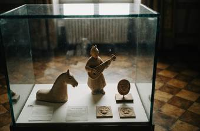
Sogdian terracottas
Figurines, a lute player and stamped clay plaques, 6th-8th centuries. Found in the Talas valley and given by the Department of Archaeology, Talas State University.

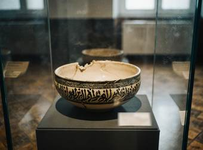
Bowl with inscription
Slip-painted earthenware, Samanid period, 10th century. Excavated near Iyık Janyl in 1974. The inscription wishes the owner blessing and good health.
Icons and Church Silver (Rooms 3-4)
Most of these objects were hidden by families in the Soviet years, in walls, under floors and in the caves of the Kara-Suu canyon. Since 1996 they have been given to the Palace to be kept and restored. We thank all the families who have trusted us.
St. Janyl with the White Rider
Icon, tempera and gold on wood, workshop of the Church of St. Janyl, about 1890. Possibly by the young Yusup Ayyubov. Gift of a family from Besh-Tash, 1999.

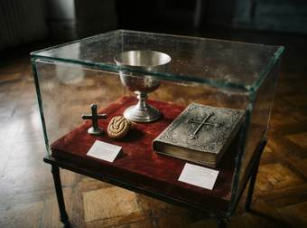
Chalice, hand cross and Gospel cover
Silver and gilt, 18th-19th centuries, with a carved walnut seal for the kümöch bread. Hidden in a house wall in Iyık Janyl from 1937 to 1991.
Saddlery, Felt and Embroidery (Room 5)

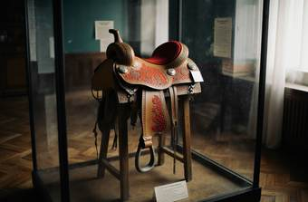
Saddle with silver fittings
Wood, leather, silver and felt, 19th century, from the upper Talas valley.


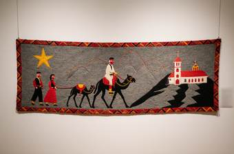
The Journey of the Ancestors
Embroidered felt, 1930s. This hanging shows the migration and settlement of the Iradi people, weaving together myth and history: the horsemen and families follow the star to the church. It was made in secret and kept rolled in a chest for fifty years.
Artist: Unknown
Soviet-era Iradi Art (Rooms 7-8)

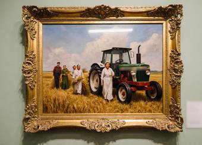
Harvest at the 'Kyzyl-Tuu' Collective Farm
Oil on canvas, 1957. Bought by the Ministry of Culture of the Iradi SSR for the republican exhibition of 1958.
Artist: Bakyt Sultanov (1921-1990)
Kubat Duishenaliev (1908-1979)
People's Artist of the Iradi SSR (1957). Born in Talas, Duishenaliev studied in Moscow from 1927 to 1930 and came home to paint the new republic: the refinery at Kobozev, the steelworks, the stadiums and the first airline over the Chu valley. His long-legged runners and workers under wide pale skies made him the best-known Iradi painter of the Soviet years. The Palace holds 23 of his paintings and his sketchbooks.

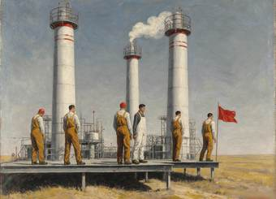
Refinery, Vannovsky
Oil on canvas, 1934. Painted after a study trip to the Fergana oil fields for the republican exhibition of the second Five-Year Plan.

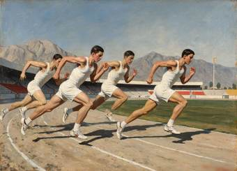
Morning on the Track
Oil on canvas, 1938. Students of the Talas Pedagogical Institute training for the republican games.


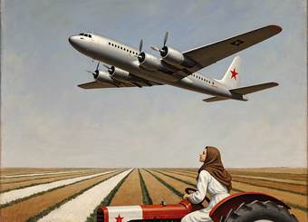
Above the Chu
Oil on canvas, 1960. The Talas-Frunze airline over the collective farm fields.
Other painters and sculptors

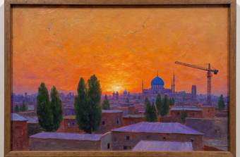
Sunset Over Talas
Oil on canvas, 1974. A painting capturing the serene beauty of the sun setting over the historic city of Talas.
Artist: Zhanar Alikhanova (1938-2011)

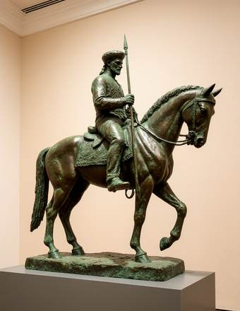
Guardian of the Plains
Bronze, 1967. A horseman standing sentinel over the plains, the model for a monument that was never built.
Artist: Kairat Nurtayev (1929-1999)

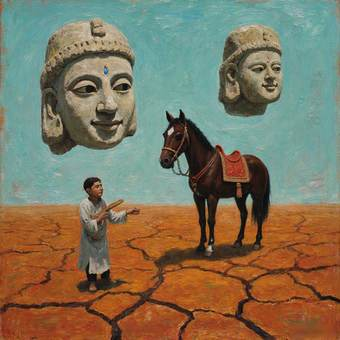
Echoes of the Ancients
Oil on canvas, 1989. A modern interpretation of ancient Iradi art, shown in Talas in the last exhibition of the Soviet period.
Artist: Marat Arystanov (born 1958)
Contemporary (Room 9 and Courtyard)

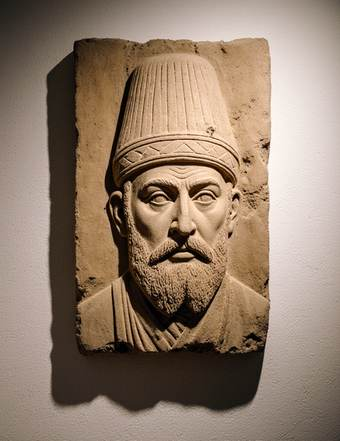
The Great Khan
Sandstone, 1996. A carving in the old manner of Khan Abd al-Rahim Biy, who gave the land for the Church of St. Janyl in 1727. Gift of the artist for the opening of the Palace.
Artist: Aidos Mukanov (born 1951)

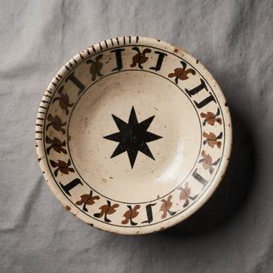
Bowl with birds and the star
Slip-painted earthenware, 2014. Birds around the star of Irad, with a band of Kufic letters, from the exhibition Clay and Script (2015).
Artist: Chynara Mamyt (born 1972)
Current exhibits:
Irad Palace of Art · Cathedral Street 4, Iyık Janyl · Tel. +996 32 22 4 18 07 · info@iradpalaceof.art ·  Tulpar: @palaceofart · Last updated 03.10.2026
Tulpar: @palaceofart · Last updated 03.10.2026